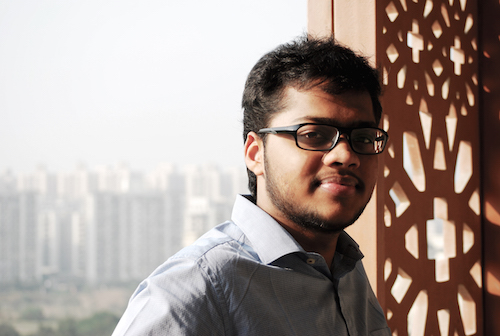

Letter From Secretary General

Dear prospective delegates, faculty advisors and well-wishers
With immense pleasure, I welcome you to Jaypee Model United Nations Conference. JMUN’15 shall be an experience different from other MUNs in the quality of the conference and debate that has been progressively on a decline in Model United Nations Conferences. Starting from the application format itself, participating in this MUN will be a rigorous, intellectually challenging and extremely competitive experience which is a throwback to the earlier generations of MUN Conferences.
The JMUN team this year is made up of innovative, intelligent and creative people that have strived and worked hard to bring you what we believe will be a unique and meaningful conference for you - the delegates. With the help of our advisors and organizers who brought you JMUN’14 in addition to the new blood of our very own hand-picked JMUN'15 team, we have managed to synergise both the old and the new that will surely surprise you all. I personally could not have asked for a better team than the team members that I have now.
I call upon every enthusiastic delegate to come and experience a life changing conference. Be part of the JMUN family, a community of future young leaders. Come and learn about the International Relations, geo-Politics, public speaking, and diplomacy and also make friendships that go beyond your community or institute. I hope JMUN can be a platform to reflect on the roles of leadership and the power of young people to make a difference. I welcome you, future young leaders to be a part of the JMUN family and I encourage you to submit your application.
Until then, please do not hesitate to contact us with any questions, comments, or concerns. I look forward to meeting you all in February- ready and prepared for what is to be a very unique MUN experience that all of you will treasure.
Sincerely,
Sambhav Jain